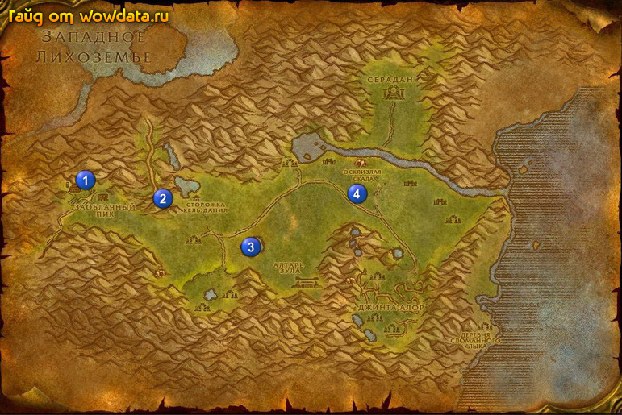

1) Закончите <Новый член семьи> 1 (14, 43), начните <Покормить малыша>.
2) Бегите закончите <Калимдорский коктейль> 2 (26, 48), начните <Рапсодия о болоте>.
3) Идите и найдите в озере Фиалковый траган 3 (40, 59) для квеста <Маленький секрет Поливалки>.
4) Бейте Среброгривый бродяга 4 (57, 47) для <Покормить малыша>.
5) Вернитесь в Заоблачный Пик, закончите <Покормить малыша> и начните <У вас появился малыш!>, и закончите его.
6) Летите в Пиратская бухта .